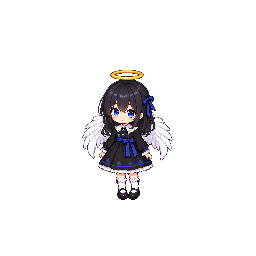
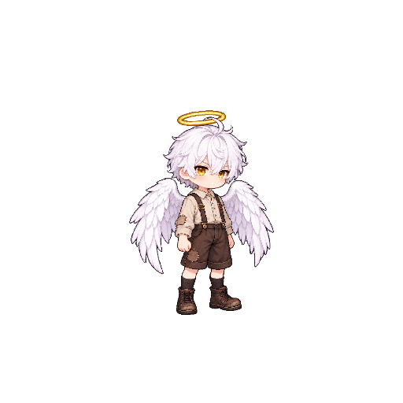

YUUKI · OS SUBÚRBIOS · REVISÃO 6
Casas com vida.
Um bairro para habitar.
Alvenaria, madeira, telhas reparadas e quintais usados no dia a dia. A diversidade das moradias aparece por fora e por dentro, com quartos separados e escadas nos sobrados.
Testar o jogo no computadorAbra o executável desta revisão:
D:\yuuki-pixel\Builds\Bairro-v6\Yuuki.exe
WASD/setas para andar · Shift para correr · F para livros e escadas · Esc para pausar.
Entre caminhando para cima na porta. Saia pela abertura na frente da casa.
Um teto para cada família
Yuuki e Tenebris continuam vizinhos, cada um com sua casa. As imagens abaixo são capturas do jogo. Clique para ampliar.
 Casa da Yuuki · camas, livros e espaço de convivência
Casa da Yuuki · camas, livros e espaço de convivência
 Casa do Tenebris · térreo e acesso ao andar superior
Casa do Tenebris · térreo e acesso ao andar superior
 Primeiro andar · quartos e escada de volta
Primeiro andar · quartos e escada de volta
 Moradia térrea · interior compacto e dividido
Moradia térrea · interior compacto e dividido
Madeira, penas e terra molhada
 Galinheiro e quintal no jogo
Galinheiro e quintal no jogoAs galinhas agora têm penas e volume, com poses de repouso, bicada e passada. Branco, ruivo e carijó.
Primeiro encontro
Uma única pose de cada personagem, na infância, para você validar o design. As animações e a substituição dos moradores provisórios ficam para depois da sua avaliação.
DESIGN PARA VALIDAÇÃO
Alice
Vestido cuidado, renda clara e detalhes azuis. Curiosa, com asas brancas.
Ver arte originalDESIGN PARA VALIDAÇÃO
Tenebris
Cabelo desalinhado, olhos dourados e roupas simples com reparos. Amigo e vizinho da Yuuki.
Ver arte original